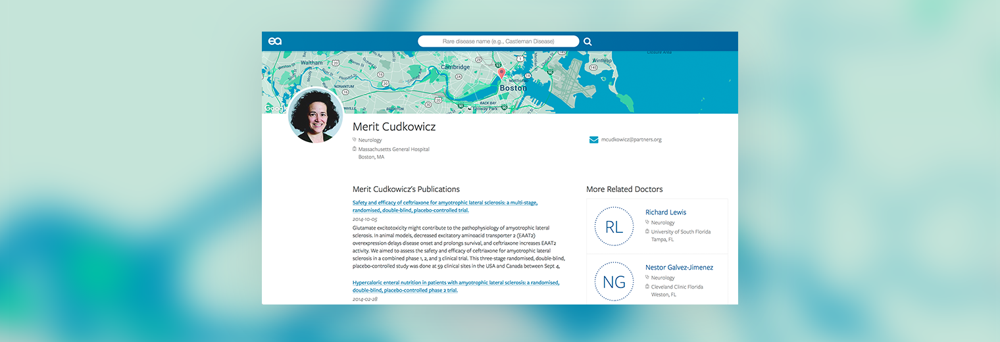

et al Health
Overview
et al health is a search engine to help people with rare diseases find a qualified specialist. Our algorithm recommends doctors based on their academic research activity. I led visual and front end design and conducted user interviews and competitive analysis. et al Health placed 3rd in our Big Ideas at Berkeley category. We also won the Berkeley I School Chen award, which recognizes innovative Master’s thesis work.
Identifying A Need

Currently the NIH recommends finding a rare disease doctor by searching PubMed for doctors who actively research the disease and contacting them. A data scientist in our master’s program saw an opportunity to simplify this process for patients, some of whom may have never encountered academic research before.
I joined his team, excited by the challenge of translating scientific journals into an acessible form, and the opportunity to help the rare disease community, which includes 30 million Americans.
Testing Our Assumptions
We began to conduct user research to test our hypothesis that this would help patients find providers, and to understand how it would fit into their search process. et al Health, along with many rare disease patient advocacy groups, operates on the assumption that rare diseases share enough commonalities to host services on common platforms.
We have tested this assumption from the beginning by focusing on Castleman, a little known disease, and ALS, which has more publicity and cases. 20 interviews with doctors and patients later, we began to understand the complexity of their search behavior and establish personas, which are summarized below.
Identifying Our Users
Since users bring a wide range of skills and knowledge to our site, it was important to categorize and refer back to three main groups during the design process.
The Patient |
The Doctor |
The Parent |
| A person directly suffering from a rare disease. May not have a direct support network. Feels alone, because their condition isn’t well-documented or supported by the healthcare system. | Diagnosed a patient with a rare disease that they had never heard of. They care about their patient but it’s out of their responsibilities to find them a provider. | A family member or close friend has a condition, and they are assisting in finding treatment. They spend significant amounts of their free time doing research on the condition. |
 |
 |
 |
| “No one can relate; they haven't even heard about it. The diagnosis took months and finding a doctor turned out to be a struggle as well. ” | “I don’t have time to give my patients the care they deserve. If I want to help, it's in my spare time.” | “I didn't stop asking questions or trying to learn about things I didn’t understand. I had to do it for my son.” |
|
|
|
I illustrated the proto personas and contributed to their development
Interview Key Findings
- Rare Diseases are more complicated than we had imagined: Many rare diseases have subtypes, which adds yet another layer of complexity. For example, Castleman has 4 different subtypes. Initially, we hoped to be able to include keywords such as subtypes, demographics, and symptoms, but we discovered there was no feasible data solution. Later versions of the designs do include subtypes, which our data scientists were able to accommodate.
- No simple quality signal: Different users want to see different signals of doctor quality, including funding source, methods, symptoms researched, and number of papers published. I accommodated this by exposing all the available information about the publications on the profile page.
- Prioritize accessibility: Some of our interviewees had limited mobility and energy, meaning the site should be very easy to use and accessible.
Wireframes
We approached UI design by first quickly hand sketching multiple divergent site layouts. We identified the strengths of each and I began to create wireframes in Sketch. These went through several iterations, and I made an InVision prototype out of the pages to conduct our first round of usability testing.
Below are two pages from the InVision prototype
User Testing Key Findings
After conducting six usability tests, we learned the following:
- Use progressive disclosure: The parent and patient personas found the publications impressive, trust inspiring, and overwhelming. This suggests that progressive disclosure of the article abstract can help us maintain transparency and approachability while accommodating all our personas.
- Add comfort with doctor photos: Adding doctor photos will involve overhead, but multiple patients appreciated photos because they added a layer of certainty and comfort in an otherwise confusing and unpredictable process.
- Stay honest: After asking many doctors and patients what they expected the doctor rating to indicate, no obvious solution emerged. The rating has the potential to communicate the wrong message and unfairly malign doctors. We are continuing to research how to message and compute rating or whether we should include it at all.
Visual Design
Our team's belief that design can be both beautiful and accessible drove the visual design process. We also faced the constraints of dynamic content- the layout had to accommodate varied assets and empty states. As the visual design lead I approached these problems by working with live data whenever possible, using Google Material design as a starting point, and holding frequent design reviews.
Results
et al Health is a responsive web app with live data for 4 diseases, including Castleman and ALS. et al Health placed 3rd in our Big Ideas at Berkeley category, and won the I School Chen award.